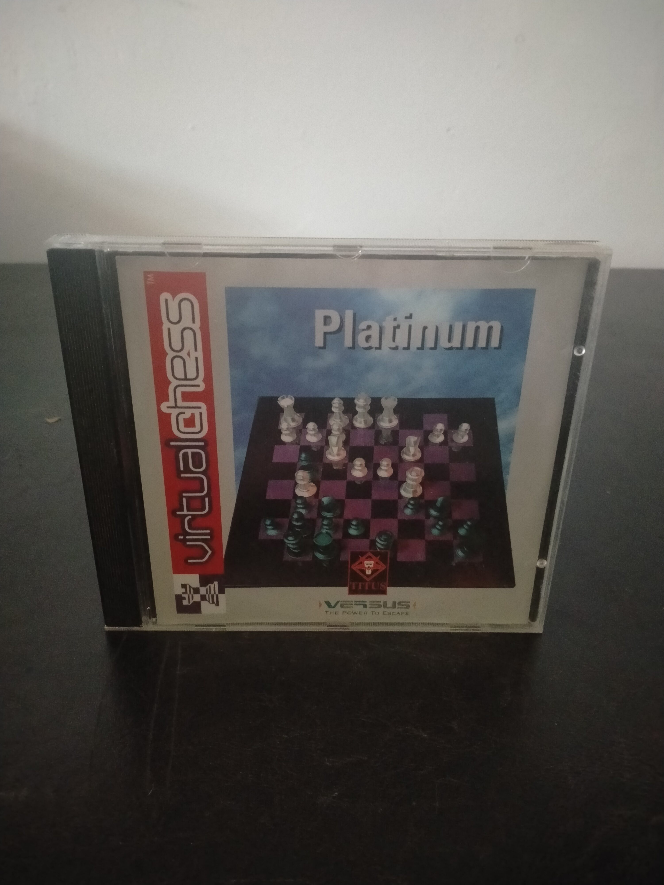

Ficha #000000
Virtual Chess Platinum
Virtual Chess Platinum es una edición en CD-ROM del simulador de ajedrez Virtual Chess desarrollado por Titus France a mediados de los años noventa. El programa ofrece partidas contra la inteligencia artificial o contra otro jugador, representación tridimensional del tablero, distintos niveles de dificultad y herramientas relacionadas con aperturas y análisis de las jugadas. Su presentación audiovisual, con piezas modeladas y secuencias animadas, refleja el periodo de expansión del CD-ROM multimedia en compatibles PC. La denominación Platinum identifica esta reedición comercial en estuche Jewel Case, distribuida mediante la línea Versus, y conserva interés documental como ejemplo de los programas de ajedrez orientados al mercado doméstico anterior a la generalización del juego en línea.
- Formato
- Jewel Case
- Plataforma
- MsDos Win3.x Win95
- Género
- Ajedrez Estrategia por turnos Simulación de juego de mesa
- Serie
- Todos Jewel Case
- Desarrollador
- Titus France SA
- Distribuidor
- Titus France SA, Versus Technologies
- EAN
- —
Contenido de la edición
- Estuche Jewel Case
- CD-ROM
- Carátula impresa
Preservación
- Protección
- No determinado
- Formato recomendado
- ISO
- Jugable en virtualización
- Sí
Se recomienda preservar el CD-ROM mediante una imagen completa y documentar las carátulas de esta reedición Platinum. La ejecución virtual es viable mediante un entorno MS-DOS o Windows clásico correctamente configurado, según el ejecutable incluido en el disco.